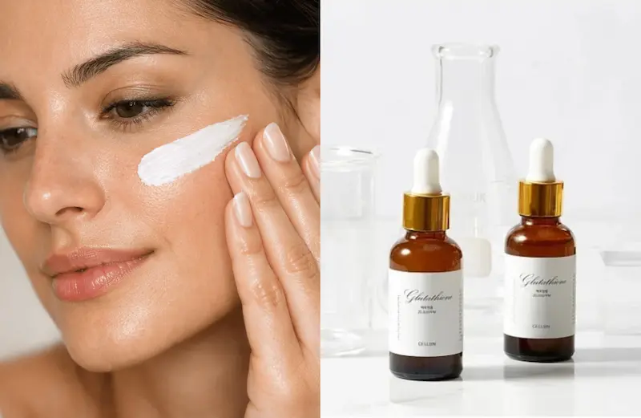
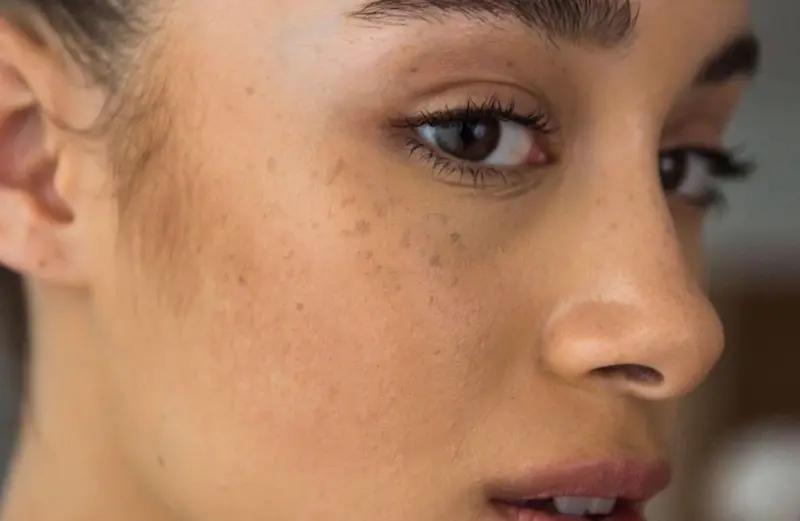
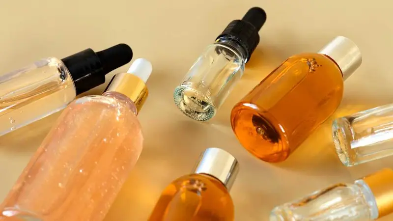

Glutationul în cosmetică: ghid științific pentru îngrijirea antioxidantă a pielii
Glutationul (Glutathione) este o tripeptidă formată din trei aminoacizi: glutamat, cisteină și glicină. Se găsește în mod natural în celulele organismului și joacă un rol important în protecția antioxidantă. În industria cosmetică, glutationul atrage interesul datorită cercetărilor privind potențialul său de a influența stresul oxidativ, aspectul pielii și uniformitatea nuanței tenului.
Interesul pentru glutation este legat în special de rolul său în mecanismele de apărare antioxidantă ale celulelor și de studiile privind posibila sa influență asupra proceselor de formare a melaninei. Unele cercetări analizează potențialul său în îngrijirea pielii cu nuanță neuniformă și pete pigmentare. Totuși, rezultatele depind de modul de utilizare, de formula produsului și de alți factori, iar datele obținute pentru o anumită metodă de aplicare nu pot fi extrapolate automat la toate produsele cosmetice care conțin glutation.
Atunci când alegi produse cosmetice cu glutation, este important să analizezi nu doar denumirea ingredientului de pe ambalaj, ci și lista completă INCI, concentrația ingredientului, stabilitatea formulei, tipul ambalajului și studiile efectuate asupra produsului finit. Glutationul poate fi sensibil la condițiile de păstrare și la oxidare, astfel că simpla sa prezență în compoziție nu garantează un efect cosmetic vizibil.
În acest ghid Estetica Lens, vom explica ce este glutationul, ce rol are în protecția antioxidantă, ce se știe despre utilizarea sa în cosmetică, cum pot fi evaluate afirmațiile privind uniformizarea și luminozitatea pielii și ce merită să urmărești atunci când alegi seruri, creme sau alte produse care conțin acest ingredient.
Descoperă serviciileGhid complet despre glutationul în cosmetică
Ce este glutationul?
Ce reprezintă acest ingredient, de ce este important pentru protecția celulelor și cum este utilizat în cosmetică.
Cum acționează glutationul?
Cum contribuie glutationul la combaterea stresului oxidativ și de ce este studiat în îngrijirea pielii.
Poate glutationul să lumineze pielea?
Ce se știe despre posibila sa influență asupra pigmentării, nuanței neuniforme și luminozității pielii.
Proprietăți și beneficii pentru piele
Protecția antioxidantă, aspectul pielii și alte efecte analizate în cercetările științifice.
Cum identifici glutationul în lista INCI?
Cum este denumit ingredientul în lista INCI și ce alte detalii merită să urmărești atunci când verifici compoziția unui produs.
În ce produse cosmetice se găsește?
Seruri, creme, măști și alte produse cu glutation: principalele formate și particularitățile lor.
Cum alegi un produs cu glutation?
Ce să urmărești în compoziție, ambalaj și descrierea produsului pentru a face o alegere informată.
Cu ce poți combina glutationul?
Cum integrezi produsul în rutina zilnică și ce trebuie să ai în vedere atunci când îl asociezi cu alte ingrediente cosmetice.
Limite și măsuri de precauție
De ce rezultatele depind de formula produsului, cum ții cont de sensibilitatea pielii și cum evaluezi realist promisiunile de marketing.
Întrebări frecvente
Cui i se potrivește îngrijirea cu glutation, când pot apărea rezultatele și cât de convingătoare sunt datele disponibile din cercetări.
Ce este glutationul și de ce este atât de discutat în cosmetică?
Îți dorești o piele cu un aspect mai proaspăt, mai luminos și cu o nuanță mai uniformă? Atunci este posibil să fi întâlnit glutationul în compoziția serurilor, cremelor și produselor destinate îngrijirii tenului cu pete pigmentare. Acest ingredient atrage atenția datorită proprietăților sale antioxidante și cercetărilor privind posibila sa influență asupra pigmentării pielii.
Glutationul este o substanță produsă în mod natural de organism. Îl poți privi ca pe o componentă importantă a sistemului intern de protecție a celulelor împotriva stresului oxidativ. În cosmetică, este utilizat pentru a completa rutina de îngrijire și este studiat în contextul uniformizării nuanței și al îmbunătățirii aspectului pielii.
Interesul pentru glutation este legat și de posibila sa influență asupra formării melaninei — pigmentul care determină culoarea pielii și contribuie la apariția petelor pigmentare. De aceea, acest ingredient poate fi întâlnit în produsele destinate unui ten cu aspect mai uniform și mai luminos. Totuși, un efect potențial nu înseamnă că orice produs cu glutation va estompa în mod sigur petele sau va oferi rezultate vizibile.
Merită, așadar, să îl incluzi în rutina ta de îngrijire? Pentru a răspunde, este important să înțelegi cum acționează glutationul, ce efecte sunt susținute de cercetări și ce criterii să urmărești atunci când alegi un produs cosmetic.

Cum acționează glutationul?
Una dintre principalele caracteristici ale glutationului este activitatea sa antioxidantă. În fiecare zi, pielea este expusă unor factori externi, precum radiațiile ultraviolete și poluarea. Aceștia pot favoriza formarea radicalilor liberi — particule reactive care, în exces, contribuie la stresul oxidativ și la deteriorarea celulelor.
1. Contribuie la protecția celulelor împotriva stresului oxidativ. În organism, glutationul participă la funcționarea sistemului antioxidant și ajută la neutralizarea anumitor compuși reactivi. Această funcție îl face interesant pentru industria cosmetică. Totuși, rolul glutationului în interiorul organismului și efectele unui produs aplicat pe piele nu sunt identice: rezultatele depind de formulă și de capacitatea ingredientului de a-și păstra activitatea.
2. Poate influența procesele de formare a melaninei. Melanina este pigmentul care determină culoarea pielii. Studiile de laborator și cercetările clinice analizează posibilitatea ca glutationul să influențeze procesele implicate în formarea acestui pigment. Din acest motiv, ingredientul se regăsește în produse destinate tenului cu nuanță neuniformă și pete pigmentare. Totuși, un efect vizibil în urma utilizării produselor cosmetice obișnuite nu poate fi garantat.
3. Completează o rutină de îngrijire echilibrată. Glutationul nu înlocuiește ingredientele hidratante, produsele care susțin bariera cutanată sau protecția zilnică împotriva soarelui. Este privit ca o posibilă componentă a unei rutine complexe de îngrijire, nu ca o soluție de sine stătătoare pentru toate problemele pielii.
Ce înseamnă acest lucru în practică? Glutationul prezintă interes în special datorită proprietăților sale antioxidante și potențialului de a influența aspectul și nuanța pielii. Pentru a evalua beneficiile unui produs concret, este important să analizezi compoziția, stabilitatea formulei și rezultatele studiilor realizate chiar asupra produsului respectiv. Iar dacă obiectivul tău este reducerea petelor pigmentare, protecția solară zilnică rămâne un pas esențial al rutinei de îngrijire.

Poate glutationul să lumineze pielea?
Glutationul este unul dintre ingredientele care atrag atenția în produsele cosmetice destinate luminozității și uniformizării nuanței pielii. Popularitatea sa este legată de proprietățile antioxidante și de posibila implicare în procesele care reglează formarea melaninei — pigmentul natural care determină culoarea pielii și contribuie la apariția petelor pigmentare.
Din acest motiv, glutationul este inclus în formule concepute pentru a îmbunătăți aspectul pielii, a reda luminozitatea și a susține un ton vizual mai uniform. Un produs bine formulat, ales în funcție de nevoile pielii, poate completa rutina de îngrijire a tenului cu aspect tern și nuanță neuniformă.
Ce legătură are glutationul cu uniformitatea nuanței pielii?
Formarea melaninei este un proces natural, care contribuie la protejarea pielii împotriva radiațiilor ultraviolete. Totuși, pigmentarea excesivă sau neuniformă poate duce la apariția petelor închise la culoare și a unui ten cu aspect neomogen. Glutationul este studiat pentru potențialul său de a influența mecanismele implicate în formarea melaninei, ceea ce îl face un ingredient de interes în produsele cosmetice destinate luminozității și uniformizării nuanței pielii.
La ce schimbări te poți aștepta?
În îngrijirea pielii, glutationul prezintă interes datorită proprietăților sale antioxidante și cercetărilor privind potențialul său de a influența pigmentarea. În funcție de formulă și de particularitățile pielii, un produs cosmetic poate contribui la o rutină orientată spre un aspect mai proaspăt și mai luminos. Totuși, gradul de uniformizare a nuanței și efectul asupra petelor pigmentare nu sunt garantate.
Pentru o rutină completă, asociază produsele cu glutation cu protecția solară zilnică. Un produs cu SPF ajută la prevenirea apariției unor noi pete pigmentare și susține îngrijirea destinată menținerii unui ton mai uniform al pielii.
De reținut: glutationul este un ingredient antioxidant interesant pentru îngrijirea pielii cu aspect tern și nuanță neuniformă. Atunci când alegi un produs, ia în considerare formula completă, nevoile pielii și recomandările producătorului, pentru a găsi o opțiune potrivită obiectivelor tale de îngrijire.
Glutationul pentru piele: luminozitate, nuanță uniformă și îngrijire antioxidantă
Dacă pielea ta pare ternă, obosită sau are o nuanță mai puțin uniformă, merită să descoperi produsele cosmetice cu glutation. Acest ingredient este apreciat pentru proprietățile sale antioxidante și pentru potențialul său în îngrijirea pielii căreia vrei să-i redai un aspect proaspăt, luminos și îngrijit.
1. Luminozitate și un aspect mai proaspăt al pielii. Glutationul este inclus în formulele produselor concepute pentru a îmbunătăți aspectul pielii. O astfel de rutină poate fi interesantă dacă îți dorești să reduci aspectul tern și să obții un ten cu un aspect mai proaspăt și mai odihnit.
2. Îngrijirea pielii cu nuanță neuniformă. Glutationul este studiat în legătură cu procesele de formare a melaninei — pigmentul care influențează culoarea pielii. De aceea, este întâlnit în produse destinate îngrijirii tenului cu nuanță neuniformă și pete pigmentare vizibile. Poate fi luat în considerare ca parte a unei rutine complexe pentru un aspect mai uniform al tenului.
3. Susținere antioxidantă. Glutationul joacă un rol important în sistemul natural de protecție a celulelor împotriva stresului oxidativ. În cosmetică, proprietățile sale antioxidante prezintă interes pentru completarea îngrijirii zilnice și menținerea unui aspect sănătos al pielii, expuse constant factorilor externi.
4. Un plus pentru rutina modernă de îngrijire. Glutationul poate fi întâlnit în seruri, creme și alte produse destinate luminozității și uniformității pielii. Poți opta pentru o formulă care include și ingrediente hidratante, utile pentru menținerea moliciunii și confortului pielii.
Cui i se potrivește îngrijirea cu glutation?
Produsele cu acest ingredient pot prezenta interes pentru persoanele care doresc să îngrijească pielea cu aspect tern, să îmbunătățească vizual uniformitatea nuanței și să adauge un ingredient antioxidant în rutina zilnică. La alegerea produsului, ține cont de nevoile pielii, de lista completă a ingredientelor și de recomandările producătorului.
Sfat Estetica Lens: dacă îți dorești un ten cu aspect mai uniform și mai luminos, combină produsele potrivite cu protecția solară zilnică. Aceasta ajută la prevenirea apariției unor noi pete pigmentare și completează rutina destinată îngrijirii pielii.
Cum identifici glutationul în compoziția produselor cosmetice?
Este destul de simplu să identifici glutationul în compoziția unui produs: pe ambalaj sau în lista INCI, caută denumirea Glutathione. Acesta este numele utilizat în mod obișnuit pentru ingredient în nomenclatura internațională a ingredientelor cosmetice.
Atunci când alegi un ser sau o cremă, nu te limita doar la prezența glutationului, ci analizează și celelalte ingrediente din formulă. Substanțele hidratante și alți antioxidanți pot completa rutina de îngrijire orientată spre luminozitate și o nuanță mai uniformă a pielii.
Sfat: dacă glutationul apare aproape de începutul listei INCI, acest lucru poate sugera o proporție mai mare în formulă. Totuși, poziția sa nu permite stabilirea concentrației exacte și nici estimarea eficienței produsului finit.
În ce produse cosmetice se găsește glutationul?
Glutationul se regăsește în diferite tipuri de produse cosmetice, în special în formule destinate luminozității pielii, uniformizării nuanței și îngrijirii antioxidante.
Seruri — un format popular pentru îngrijirea pielii cu aspect tern și pentru susținerea unui ten cu aspect mai proaspăt și mai luminos.
Creme de față — permit integrarea glutationului în rutina zilnică, alături de ingrediente hidratante și emoliente care contribuie la confortul pielii.
Măști și fiole — oferă variante suplimentare de îngrijire și se regăsesc adesea în formule complexe, concepute pentru a îmbunătăți aspectul pielii.
Produse pentru uniformizarea nuanței pielii — pot combina glutationul cu alte ingrediente utilizate în îngrijirea tenului cu nuanță neuniformă și pete pigmentare vizibile.
Atunci când alegi un produs, ține cont nu doar de format, ci și de lista completă a ingredientelor, de particularitățile pielii tale și de scopul pentru care a fost conceput. Formula în ansamblu este cea care determină cât de bine se potrivește produsul rutinei tale de îngrijire.
Cum alegi un produs cu glutation?
Pentru a obține cele mai bune rezultate de la rutina de îngrijire, alege un produs cu glutation în funcție de nevoile pielii și de rezultatul pe care dorești să îl obții.
1. Stabilește obiectivul îngrijirii. Dacă îți dorești mai multă luminozitate și un aspect proaspăt al pielii, ia în considerare serurile. Pentru îngrijirea zilnică, poți alege o cremă cu glutation și ingrediente hidratante.
2. Analizează lista INCI. Caută denumirea Glutathione și acordă atenție celorlalte ingrediente din formulă: de exemplu, acidul hialuronic pentru hidratare sau niacinamida pentru îngrijirea complexă a pielii cu nuanță neuniformă.
3. Ține cont de ambalaj. Glutationul poate fi sensibil la oxidare, așa că atât calitatea formulei, cât și ambalajul contează. Alege produse care oferă instrucțiuni clare privind păstrarea și perioada de utilizare.
4. Alege produsul în funcție de tipul pielii. Pentru pielea uscată, sunt potrivite formulele cu ingrediente hidratante suplimentare, iar pentru pielea sensibilă, produsele cu formule simple, fără o cantitate mare de parfumuri potențial iritante.
5. Nu uita de protecția solară. Dacă îți dorești un ton mai uniform al pielii, folosește zilnic un produs cu protecție solară. Acesta este un pas important în rutina de îngrijire pentru prevenirea petelor pigmentare.
Sfat Estetica Lens: nu alege doar un produs pe a cărui etichetă scrie „Glutathione”, ci caută o formulă bine concepută, potrivită nevoilor pielii tale.

Cu ce poți combina glutationul în rutina de îngrijire a pielii?
Glutationul se integrează bine într-o rutină complexă de îngrijire. În combinație cu alte ingrediente cosmetice, poate contribui la o rutină orientată spre luminozitate, hidratare și un ton mai uniform al pielii.
Niacinamidă. O combinație populară pentru îngrijirea pielii cu nuanță neuniformă. Niacinamida ajută la susținerea barierei cutanate și la îmbunătățirea aspectului pielii.
Vitamina C. Este cunoscută pentru proprietățile sale antioxidante și este utilizată pe scară largă în produsele destinate luminozității pielii. Utilizarea împreună cu glutationul poate face parte dintr-o rutină antioxidantă complexă, dacă formulele sunt bine tolerate de piele.
Acid hialuronic. Ajută la reținerea apei, menține pielea suplă și reduce senzația de uscăciune. Este o alegere potrivită dacă dorești să combini îngrijirea nuanței pielii cu hidratarea.
Ceramide. Susțin bariera protectoare a pielii și contribuie la menținerea hidratării. Sunt deosebit de utile în îngrijirea pielii uscate sau sensibile.
Produs cu protecție solară SPF 30–50. Este un pas esențial la finalul rutinei de dimineață, mai ales dacă îți dorești un ton mai uniform al pielii și vrei să reduci efectele radiațiilor ultraviolete asupra apariției petelor pigmentare.
Sfat Estetica Lens: nu este necesar să folosești toate aceste ingrediente în același timp. Începe cu o rutină simplă, introdu produsele noi treptat și urmărește reacția pielii.
Selecție de produse de la BeautyPanda
Selecție editorială Estetica Lens.
Această selecție include creme coreene pentru față, destinate
diferitelor nevoi de îngrijire. Descoperim produsele, scopul
utilizării și particularitățile formulelor.
Disponibilitatea și condițiile actuale de achiziție pot fi
verificate direct la
BeautyPanda.

Glutationul în cosmetică: limite și măsuri de precauție
Glutationul poate fi inclus în rutina de îngrijire cosmetică, însă atunci când alegi un produs este important să ții cont de particularitățile pielii, de compoziția produsului și de recomandările producătorului.
Piele sensibilă. Reacția pielii depinde de întreaga formulă, nu doar de glutation. Înainte de prima utilizare a unui produs nou, este recomandat să îl testezi pe o zonă mică de piele.
Stabilitatea formulei. Glutationul se poate oxida în anumite condiții. Respectă recomandările de păstrare, închide bine ambalajul și nu utiliza produsul după data expirării.
Toleranța individuală. Dacă după aplicare apar roșeață persistentă, mâncărime sau senzație de arsură, întrerupe utilizarea. În cazul unei reacții intense sau prelungite, consultă un dermatolog.
Așteptări realiste. Rezultatele depind de concentrația ingredientelor, de particularitățile formulei și de starea pielii. Pentru îngrijirea pielii cu nuanță neuniformă, este important să folosești regulat un produs cu protecție solară cu spectru larg.
Important: produsele cosmetice cu glutation nu trebuie confundate cu preparatele injectabile sau cu suplimentele administrate pe cale orală. Aceste modalități de utilizare au particularități și riscuri diferite. Pentru îngrijirea la domiciliu, alege produse cosmetice destinate exclusiv aplicării externe și respectă instrucțiunile producătorului.
Întrebări frecvente despre glutation
Ce este glutationul în cosmetică?
Glutationul este un tripeptid cu proprietăți antioxidante, utilizat în produsele cosmetice pentru îngrijirea pielii. Este apreciat pentru potențialul său în formulele destinate luminozității și uniformizării nuanței pielii.
Ajută glutationul la deschiderea nuanței pielii?
Glutationul este studiat în legătură cu procesele de formare a melaninei, motiv pentru care este inclus în produse destinate îngrijirii pielii cu nuanță neuniformă. Rezultatul depinde de formula produsului și de particularitățile individuale ale pielii.
Cui i se potrivește cosmetica cu glutation?
Aceste produse pot fi o opțiune pentru persoanele care doresc să includă îngrijirea antioxidantă în rutină și să îmbunătățească aspectul pielii terne. La alegerea produsului, este important să ții cont de tipul pielii, de sensibilitatea acesteia și de lista completă a ingredientelor.
Cu ce ingrediente poate fi combinat glutationul?
În formulele cosmetice, glutationul este combinat cu niacinamidă, vitamina C, acid hialuronic și alte ingrediente de îngrijire. Compatibilitatea depinde de formulele concrete și de toleranța pielii la produs.
Cât de des pot folosi produsele cu glutation?
Frecvența utilizării depinde de produsul ales. Respectă instrucțiunile producătorului și introdu treptat produsul nou în rutină, mai ales dacă ai pielea sensibilă.
Pot folosi glutationul în fiecare zi?
Multe produse cosmetice cu glutation sunt concepute pentru utilizare regulată. Dacă produsul este bine tolerat de piele, folosește-l conform instrucțiunilor și nu uita de protecția solară zilnică.
Cum identific glutationul în compoziția unui produs?
În lista ingredientelor INCI, caută denumirea Glutathione. Simpla prezență a acestui ingredient în compoziție nu indică concentrația sa și nu garantează obținerea unui anumit rezultat.
Împărtășește experiența ta
Părerea ta îi ajută pe alții să înțeleagă dacă acest ingredient li se potrivește. Chiar și 1–2 fraze sunt utile
Nu știți ce să scrieți? Selectați opțiunile — textul se va genera automat
Publicăm doar recenzii reale. Reclama și linkurile nu trec de moderare
Prin trimiterea comentariului, sunteți de acord cu Politica de confidențialitate.